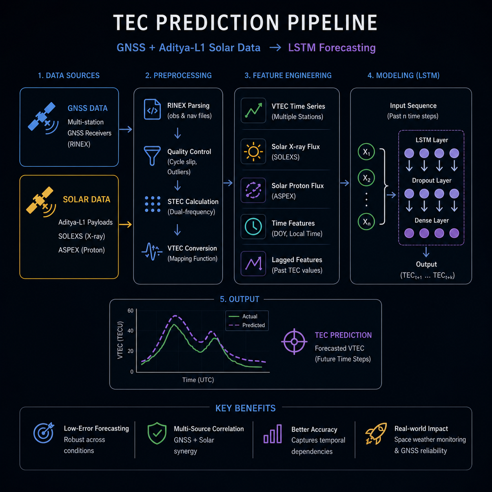

Physics · GNSS · Space Weather
Exploring physical systems through data, computation, and space-based observations
Space physics, computational modeling, and data-driven analysis of physical systems
SAC-ISRO, STAR Labs — space-based data analysis, modeling, and simulation projects
Machine learning, time-series modeling, and multi-source scientific data integration

Developed an LSTM-based TEC prediction pipeline using GNSS and solar data, enabling robust ionospheric forecasting across varying conditions.
Stable performance under noise and cross-location evaluation
View Project →